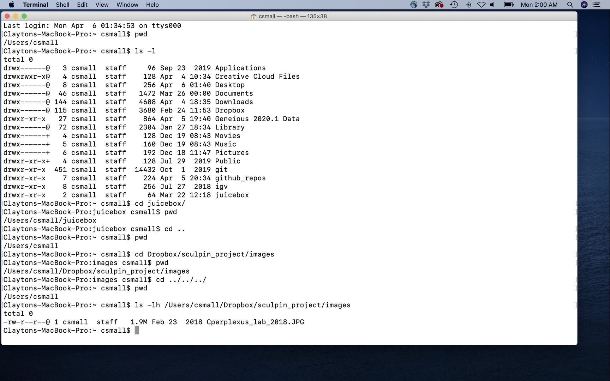
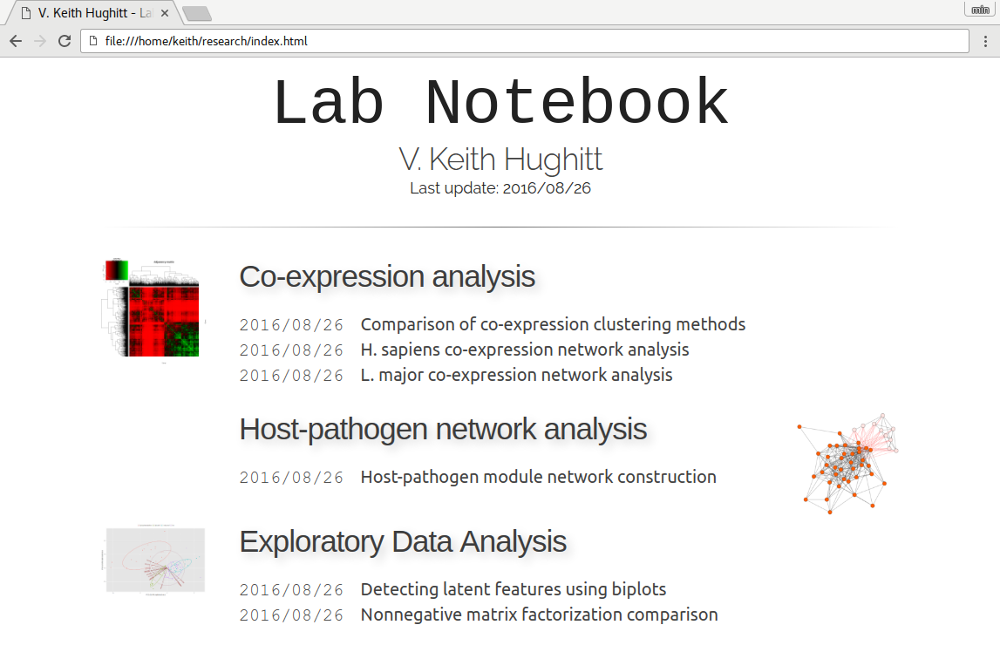

Statistics for Bioengineering - Week 1
Week 1: Foundational Data Science Tools
Week 1 Topics
- Unix & shell commands
- R scripts & reproducible analysis
- Use of GenAI
- Tidy data and data wrangling
- Markdown
Note
Readings: Chapters 1-8, Appendix A1
Packages for This Week
Tip
The tidyverse is a collection of packages including: ggplot2, dplyr, tidyr, readr, purrr, tibble, stringr, and forcats.
Statistics for Bioengineers and Bioscientists

Welcome to the course! This term we will build your skills in statistical thinking, programming in R and Unix, reproducible research practices, and data visualization.
Goals of the Course
This is a practical course and we will learn by doing
- Teach fundamental skills for your scientific careers
- Provide broad coverage of modern statistics
- Provide computational tools necessary for your work
- Prepare you for more advanced statistics and programming
What Will You Learn?
- Read and write code in Unix and R
- Implement reproducible research practices
- Exploratory data analysis and visualization
- Probability, distributions, and sampling
- Experimental design and hypothesis testing
- Statistical analyses (t-tests, contingency tests)
- Linear and non-linear modeling
- Classical machine learning
- Ordination (PCA, tSNE, UMAP)


Class Logistics
Schedule: Tuesdays and Thursdays, 4:00pm - 5:50pm in KC107
Most of class time will be hands-on coding practice.
Assignments:
- Weeks 2-9: Coding and statistics homework
- Week 11: Final coding project designing scripts for your research
Required Materials
- Access to a laptop running Windows, MacOS, or Linux
- Announcements and assignments posted on Canvas
- Course material: https://wcresko.github.io/BioE_Stats_Wi2026/
- Reading material: https://wcresko.github.io/BioE_Stats_Book/
No textbooks or purchases required!
Class Introductions
Who are you?
- Your name and year in grad school
- Home lab or rotation lab
- What is your good news this week?
- What has your experience with programming/statistics been like?
Why Statistics & Coding?
Why Do We Need Statistics?
The Problem: We almost never know the world perfectly, but still need to draw conclusions or make decisions. We estimate parameters from samples and test hypotheses using data.
The Solution: Well-known mathematical rules help us do this. Computers let us apply them quickly and visualize large amounts of data.
What statistics enables:
- Point estimates and confidence intervals
- Experimental design and hypothesis testing
- Data reduction of highly dimensional data
Foundation Required
We need a firm understanding of probability, sampling, and distributions.
Why Do We Need Coding?
- Incredibly fast and powerful for repeated actions
- Handles large datasets that Excel and GUIs can’t manage
- Access to thousands of free programs made for and by scientists
- Commands work identically across platforms and on clusters like Talapas
The Most Important Reason
REPRODUCIBILITY — You can keep your scripts to see exactly what was done
Coding vs. Scripting
| Type | Description | Examples | Speed | Flexibility |
|---|---|---|---|---|
| Coding | Uses compilers to translate code | C++, Fortran | Faster | Less flexible |
| Scripting | Interpreted on the fly | Python, R, Julia | Slower | More flexible |
Note
The distinction has become fuzzy—most modern pipelines combine both approaches.
Programming Languages
Programming languages are called languages for a reason:
- Learning to program is like learning a new spoken language
- Learning one helps you learn another
- Use it or lose it! Practice is the best way to maintain skills
Remember
Computers are literal! You must use explicit, pre-defined phrases to tell your computer exactly what you want.
Installing Programs
Platform Considerations
Note
- Mac and Linux use the same shell language
- Windows requires additional setup (WSL2)
- R and RStudio work on any platform
Installing R and RStudio
R Installation:
- Download from: https://www.r-project.org
- Can run from command line or on clusters
RStudio Installation:
- Download from: http://www.rstudio.com
- Use the Desktop Open Source (Free) version
- Provides helpful features like code completion and debugging
RStudio

RStudio interface screenshot
Accessing the Shell
- Mac users: Open the “Terminal” app or use ‘iTerm2’
- Linux users: Open one of several “Terminal” apps
Windows users have additional setup
See the next slides for WSL2 installation
Accessing the Shell — Windows
Installation Steps:
- Guide: https://ubuntu.com/tutorials/install-ubuntu-on-wsl2-on-windows-10
- Run Windows PowerShell as administrator
- Install WSL2 by typing
wsl --install - Restart your computer
- Search for and install Ubuntu from Microsoft Store
Alternative: Type wsl --install -d ubuntu on PowerShell to do steps 3-5 at once
Accessing the Shell — Windows
- Open
Ubuntuand set up a username and password (doesn’t need to match Windows login) - Note that this is the
UbuntuLinux operating system that you installed, not the Windows Powershell - Now you can use the
Terminalapplication in Ubuntu - Run
sudo apt updatethensudo apt upgradeto ensure everything is current - Create folders and files within your Ubuntu folder
- In addition, you can access your Windows files and folders using
cd /mnt/c
The Unix Shell
What is Unix?
- A scripting language developed in 1969, released in 1973
- Serves as the base language for many programs and computers
- Linux is an open-source version of the same language
- Runs Apple OSX Macs, Linux Workstations, Google Android, Virtual Machines….
What is a Shell?
- The ‘shell’ is a program that takes commands and gives them to the operating system
- The most common is
Bash, but alsoTshandZsh Bashacts as the shell in Macs and Linux- You access the
bashshell via a terminal window
The Mac Terminal


Terminal Within RStudio

Shell Command Structure

| Component | Description |
|---|---|
| Prompt | Indicates computer is ready to accept a command |
| Command | Tells computer to do a specific task |
| Options | Change the behavior of a command |
| Argument | What the command should operate on |
Navigation Commands
The way you normally navigate


How is a Computer Organized?
- System of directories (folders) and files
/= the root directory, which holds all other directories~is shorthand for your home folder- The “path” refers to file location (e.g.,
/Users/wcresko/Documents)


Relative and Absolute Paths

Relative and Absolute Paths

Relative and Absolute Paths

Navigating the file system and working with files using Shell Commands
Navigating the File System

Common Navigation Commands
| Command | Description | Common Options |
|---|---|---|
pwd |
Print working directory | (In Windows, cd prints working directory) |
ls |
List directories and files | -F, -l, -r, -S, -t |
cd |
Change directory | .. (up one level), - (previous) |
Common File Commands
| Command | Function |
|---|---|
mkdir |
Make new folders |
nano, touch |
Make new files |
mv |
Rename or move files |
cp |
Copy files |
rm |
Delete files |
wc |
Word count / file length |
cat |
Reading/concatenating files |
head, tail |
View beginning or end of files |
Naming Conventions
- Avoid spaces in file names
- Don’t start with a
– - Stick to letters, numbers,
.,-, and_ - Use appropriate file extensions (.fasta, .txt, etc.)
The shell trusts you
It will delete files you say to delete and override files with duplicate names!
Getting Help
Manual pages:
- Type
man [command_name]to access the manual - Type
qto exit
Also…the internet!
- Stack Overflow, GitHub discussions, official documentation
Exercise
Exercise
- Make a new directory and add a file named
practice.txtwith some text - Read the contents and get its length
- Rename the file to
super_practice.txt - Move it to a new folder named
sandbox - Make a copy named
super_practice_copy.txt - Verify the contents match, then delete the original
R and RStudio
Why use R?
- Powerful, flexible, and free
- Runs on all platforms
- Superb data management & graphics capabilities
- Thousands of community-contributed packages
- Embed analyses in dynamic documents using Quarto
- Lots of online help available
R Resources
| Resource | URL |
|---|---|
| The R Project | http://www.r-project.org |
| RStudio | http://www.rstudio.com |
| R for Data Science | https://r4ds.had.co.nz |
| Quick R | http://www.statmethods.net |
| Bioconductor | http://www.bioconductor.org |
| Stack Overflow | https://stackoverflow.com/questions/tagged/r |
Tip
When you get an error, paste it into Google—someone else has had the same problem!
RStudio Interface
Tip
R is the programming language, RStudio is the Integrated Developer Environment (IDE) to let you write scripts in R (and other languages like Python and C++)

| Pane | Location | Purpose |
|---|---|---|
| Code Editor | Top-left | Write/edit scripts, view data |
| Console | Bottom-left | Interactive R session |
| Environment | Top-right | View objects, command history |
| Files/Plots/Help | Bottom-right | Navigate files, view plots, get help |
Tip
Customize layout in Tools → Global Options → Pane Layout
Installing and Loading Packages
R’s power comes from community-contributed packages:
- Install once (downloads package)
- Load each session (makes functions available)
Note
Also install via RStudio: Tools → Install Packages
The Tidyverse Ecosystem
| Package | Purpose |
|---|---|
dplyr |
Data manipulation (filter, select, mutate, summarize) |
ggplot2 |
Data visualization |
tidyr |
Reshaping data (pivot, separate, unite) |
readr |
Fast reading of CSV, TSV files |
stringr |
String manipulation |
purrr |
Functional programming tools |
Loading tidyverse loads all of these at once!
R Basics
R Script Basics
- A series of R commands that will be executed
- Add comments using hashtags
# - Use pipes to connect steps
Best Practice
Always comment your code! Future you will thank present you.
Basic Math in R
- Commands submitted through terminal, console, or scripts
- Anything following
#is a comment - R follows standard mathematical order of operations
Assigning Variables
- Use the
<-operator - Names must begin with a letter
- R is case sensitive
These do not work: 3y <- 3 or 3*y <- 3
Arithmetic and Functions
logis a built-in function—the object goes in parentheses- Results can be assigned to new variables
Common Data Types
| Statistical Term | Description | R Type |
|---|---|---|
| Numerical (continuous) | Measurements (height, weight) | numeric |
| Numerical (discrete) | Whole number counts | integer |
| Categorical (nominal) | Unordered categories (species) | factor |
| Categorical (ordinal) | Ordered categories (low/med/high) | ordered factor |
| Logical / Boolean | TRUE or FALSE values | logical |
| Text / String | Free-form text | character |
| Date / Time | Temporal data | Date, POSIXct |
Tip
Use class() or str() to check data types
Strings
- Characters need quotation marks
c()stands forconcatenate
Factors
- Sometimes we want to treat characters as units for calculations
- These are called
factors—important for statistical analyses comparing groups
Data Type Coercion
Convert between data types using as.* functions:
| Function | Input | Output |
|---|---|---|
as.numeric("42") |
"42" |
42 |
as.numeric("hello") |
"hello" |
NA (with warning) |
as.character(42) |
42 |
"42" |
as.logical(1) |
1 |
TRUE |
as.logical(0) |
0 |
FALSE |
Warning
as.numeric() on a factor returns integer codes! Use as.numeric(as.character(x)) instead.
Vectors
R thinks in terms of vectors (lists of values):
Creating Vectors
Use functions like seq and sample:
[1] 0.0 0.1 0.2 0.3 0.4 0.5 0.6 0.7 0.8 0.9 1.0 1.1 1.2 1.3 1.4
[16] 1.5 1.6 1.7 1.8 1.9 2.0 2.1 2.2 2.3 2.4 2.5 2.6 2.7 2.8 2.9
[31] 3.0 3.1 3.2 3.3 3.4 3.5 3.6 3.7 3.8 3.9 4.0 4.1 4.2 4.3 4.4
[46] 4.5 4.6 4.7 4.8 4.9 5.0 5.1 5.2 5.3 5.4 5.5 5.6 5.7 5.8 5.9
[61] 6.0 6.1 6.2 6.3 6.4 6.5 6.6 6.7 6.8 6.9 7.0 7.1 7.2 7.3 7.4
[76] 7.5 7.6 7.7 7.8 7.9 8.0 8.1 8.2 8.3 8.4 8.5 8.6 8.7 8.8 8.9
[91] 9.0 9.1 9.2 9.3 9.4 9.5 9.6 9.7 9.8 9.9 10.0 [1] 100.00 98.01 96.04 94.09 92.16 90.25 88.36 86.49 84.64 82.81
[11] 81.00 79.21 77.44 75.69 73.96 72.25 70.56 68.89 67.24 65.61
[21] 64.00 62.41 60.84 59.29 57.76 56.25 54.76 53.29 51.84 50.41
[31] 49.00 47.61 46.24 44.89 43.56 42.25 40.96 39.69 38.44 37.21
[41] 36.00 34.81 33.64 32.49 31.36 30.25 29.16 28.09 27.04 26.01
[51] 25.00 24.01 23.04 22.09 21.16 20.25 19.36 18.49 17.64 16.81
[61] 16.00 15.21 14.44 13.69 12.96 12.25 11.56 10.89 10.24 9.61
[71] 9.00 8.41 7.84 7.29 6.76 6.25 5.76 5.29 4.84 4.41
[81] 4.00 3.61 3.24 2.89 2.56 2.25 1.96 1.69 1.44 1.21
[91] 1.00 0.81 0.64 0.49 0.36 0.25 0.16 0.09 0.04 0.01
[101] 0.00Basic Statistics Functions on Vectors
| Function | Description |
|---|---|
mean(x) |
Calculate the mean |
median(x) |
Calculate the median |
var(x) |
Calculate the variance |
sd(x) |
Calculate the standard deviation |
sum(x) |
Sum of all values |
length(x) |
Number of elements |
sample(x, replace=T) |
Random sample with replacement |
Note
All of these can function on vectors which are assigned to a variable (e.g. x above)
Logical Operators
| Operator | Meaning | Example |
|---|---|---|
== |
equals | x == 5 |
!= |
not equals | x != 5 |
<, > |
less/greater than | x < 10 |
& |
and | x > 0 & x < 10 |
| |
or | x < 0 | x > 10 |
%in% |
is element of | x %in% c(1, 2, 3) |
Handling Missing Data (NA)
| Task | Code | Result |
|---|---|---|
| Check for NA | is.na(x) |
Logical vector |
| Find non-missing | !is.na(x) |
Inverted logical |
| Don’t do this! | x == NA |
Always returns NA |
| Mean ignoring NA | mean(x, na.rm=TRUE) |
Computes mean |
Important
Always use is.na() to check for missing values, never == NA
Special Numeric Values
| Value | Meaning | Example |
|---|---|---|
NA |
Not Available (missing data) | c(1, NA, 3) |
NaN |
Not a Number (undefined math) | 0/0 |
Inf |
Positive infinity | 1/0 |
-Inf |
Negative infinity | -1/0 |
Test with: is.na(), is.nan(), is.infinite(), is.finite()
Getting Help in R
| Command | Description |
|---|---|
help(mean) or ?mean |
Open help page |
example(mean) |
Run examples from help |
help.search("mean") |
Search all help pages |
args(mean) |
Show function arguments |
Working Directory
| Task | Code |
|---|---|
| Check current directory | getwd() |
| Set new directory | setwd("/path/to/folder") |
| List files | list.files() |
Tip
RStudio Projects (File → New Project) automatically set your working directory
Common R Errors
| Error Message | Meaning | Fix |
|---|---|---|
object 'x' not found |
Variable doesn’t exist | Check spelling; run line that creates it |
could not find function |
Package not loaded | Use library() or check spelling |
unexpected ')' |
Mismatched brackets | Count opening/closing brackets |
non-numeric argument |
Wrong data type | Check with class() |
Tip
Read error messages from the bottom up—the last line tells you what went wrong
A few examples of basic R code
Drawing Samples from Distributions

Figure 1: Random samples from distributions
Histograms

Figure 2: Histogram of normally distributed data
Density Curves

Figure 3: Histogram with density curve overlay
Binomial Distribution

Figure 4: Binomial distribution: 10 successes (out of 20 trials) is most frequent
Multiple Plots
Use par(mfrow=c(rows, cols)) to create composite figures:
seq_1 <- seq(0.0, 10.0, by = 0.1)
seq_2 <- seq(10.0, 0.0, by = -0.1)
par(mfrow=c(2,2))
plot(seq_1, xlab="time", ylab="p in pop 1", type = "p", col = 'red', pch = 19)
plot(seq_2, xlab="time", ylab="p in pop 2", type = "p", col = 'green', pch = 19)
plot((seq_2)^2, xlab="time", ylab="p2 in pop 2", type = "p", col = 'blue', pch = 19)
plot((seq_1)^2, xlab="time", ylab ="p in pop 1", type = "l", col = 'orange', lwd = 2)
Figure 5: Multiple plots in a single figure
Tidy Data & File Types
An Example to Get Started

What is Tidy Data?

What is Tidy Data?
Different formats may be appropriate for different applications, but one is particularly convenient for data science: tidy data.
The Three Principles of Tidy Data
- One observation per row — All measurements for a single unit
- One variable per column — Something measured across all units
- One type of observation per data set
New observations can easily be added as rows, and new variables as columns.
Tidy Data Set Rules of Thumb
- Store data in nonproprietary formats (plain ASCII text / flat files)
- Keep an uncorrected file when doing analyses
- Use descriptive names for files and variables
- Include a header line with descriptive variable names
- A column should contain only one data type
- Every data set should be accompanied by a
data dictionarythat- describes each variable
- describes the overall data set
- includes information like researchers, dates, platforms, versions, etc..
- Data sets are read into R, but the original file isn’t altered
- Any modifications to the file can be read out to a new file with a different name
Creating an Example Data Frame
hydrogel_concentration <- factor(c("low", "high", "high", "high",
"medium", "medium", "medium","low"))
compression <- c(3.4, 3.4, 8.4, 3, 5.6, 8.1, 8.3, 4.5)
conductivity <- c(0, 9.2, 3.8, 5, 5.6, 4.1, 7.1, 5.3)
mydata <- data.frame(hydrogel_concentration, compression, conductivity)
row.names(mydata) <- paste0("Sample_", 1:8)
mydata |>
rownames_to_column(var = "Sample") |>
kable()| Sample | hydrogel_concentration | compression | conductivity |
|---|---|---|---|
| Sample_1 | low | 3.4 | 0.0 |
| Sample_2 | high | 3.4 | 9.2 |
| Sample_3 | high | 8.4 | 3.8 |
| Sample_4 | high | 3.0 | 5.0 |
| Sample_5 | medium | 5.6 | 5.6 |
| Sample_6 | medium | 8.1 | 4.1 |
| Sample_7 | medium | 8.3 | 7.1 |
| Sample_8 | low | 4.5 | 5.3 |
Importing data
Common File Formats
| Format | Extension | Separator | Notes |
|---|---|---|---|
| Comma-separated | .csv |
, |
Most common, works with Excel |
| Tab-separated | .tsv, .txt |
tab | Good for data with commas |
| Plain text | .txt |
varies | Check file for delimiter |
| Excel | .xlsx |
n/a | Use readxl package |
Warning
Always check imported data with head(), str(), or View()
Genomic Data Formats
| Format | Extension | Description |
|---|---|---|
| FASTA | .fasta, .fa |
Sequence data (DNA, RNA, protein) |
| FASTQ | .fastq, .fq |
Sequences with quality scores |
| SAM/BAM | .sam, .bam |
Sequence alignments (text/binary) |
| VCF | .vcf |
Variant call format |
| BED | .bed |
Genomic regions |
Note
Most bioinformatics programs work with FASTQ data
Reading and Writing Data
Reading:
| File Type | Function | Example |
|---|---|---|
| CSV | read.csv() |
read.csv('file.csv') |
| Tab-separated | read.table() |
read.table('file.txt', header=TRUE, sep='\t') |
| Excel | read_excel() |
read_excel('file.xlsx') (requires readxl) |
Writing:
| Task | Function |
|---|---|
| Export as CSV | write.csv(data, "output.csv", row.names=FALSE) |
| Export tab-separated | write.table(data, "output.txt", sep="\t", row.names=FALSE) |
R Exercise: Transcriptomic Data
Exercise
- Examine the stickleback transcriptomic data file.
- How many rows and columns are there?
- What types of variables are there?
- Read the data file into R and analyze it
Transcriptomic Data Analysis
RNAseq_Data <- read.csv('<name_of_file>', header=TRUE, sep=',')
head(RNAseq_Data)
tail(RNAseq_Data)
print(RNAseq_Data$ENSGACG00000000010)
print(RNAseq_Data$ENSGACG00000000010 > 45.0)
summary(RNAseq_Data$ENSGACG00000000003)
boxplot(RNAseq_Data$ENSGACG00000000003 ~ RNAseq_Data$Treatment,
col = "red", ylab = "Expression Level", xlab = "Treatment")Reproducible Research with Quarto
Why Reproducible Research?
For Science:
- Others can verify your results
- Methods are completely documented
- Enables cumulative knowledge building
For You:
- Future you will understand past work
- Easy to update with new data
- Professional documentation for publications
The Replication Crisis
Many published findings cannot be reproduced. Quarto helps by embedding analysis code directly in documents.

The Importance of Organization

Keeping your data, code, and analyses organized is crucial for reproducibility.
Lab Notebook Example
Quarto is a scientific organization and publishing system
What is Quarto?
- Open-source scientific and technical publishing system
- Combines code + text + outputs in a single document
- Successor to R Markdown with expanded capabilities
- Supports R, Python, Julia, and more
- Documentation: https://quarto.org/docs/authoring/markdown-basics.html
Key Benefits
Reproducibility, documentation, multiple output formats
Quarto Document Structure
1. YAML Header - which has global options for rendering
2. Markdown Text — Regular text with formatting
3. Code Chunks — R (or Python or …) code that runs
Note
This will render to your choice of document (e.g. html, pdf, word, etc) and you have many different options for formatting the output, including the code evaluation
Markdown Basics
Text Formatting
| Syntax | Result |
|---|---|
*italic* |
italic |
**bold** |
bold |
`code` |
code |
Lists: Use
- for bullets,
1. for numbered
Code Chunk
- You embed code into chunks that look like this:
\```{r}
#| label: bio-example-setup-one
#| echo: true
#| output: false
set.seed(42)
gene_expression <- tibble(
sample_id = paste0("S", 1:50),
treatment = rep(c("Control", "Drug_A", "Drug_B", "Drug_C", "Drug_D"), each = 10),
gene_BRCA1 = c(rnorm(10, 100, 15), rnorm(10, 150, 20), rnorm(10, 80, 12),
rnorm(10, 120, 18), rnorm(10, 95, 14)),
gene_TP53 = c(rnorm(10, 200, 25), rnorm(10, 180, 22), rnorm(10, 250, 30),
rnorm(10, 190, 28), rnorm(10, 210, 24))
)
\```Code Chunk Options
Quarto uses #| (hash pipe) for chunk options:
| Option | Description |
|---|---|
#| echo: true |
Show code in output |
#| eval: false |
Don’t run the code |
#| output: false |
Hide results |
#| warning: false |
Hide warnings |
#| fig-cap: "..." |
Figure caption |
#| fig-width: 8 |
Figure width (inches) |
Note that these go into the beginning of each code chunk
Including Images
Basic image:
With options:
Equations
Inline math:
$e=mc^2$ → \(e=mc^2\)
Display math:
\[\iint\limits_{a}^{b} f(x,y) \, dx \, dy\]
Example: Biological Data Analysis
set.seed(42)
gene_expression <- tibble(
sample_id = paste0("S", 1:50),
treatment = rep(c("Control", "Drug_A", "Drug_B", "Drug_C", "Drug_D"), each = 10),
gene_BRCA1 = c(rnorm(10, 100, 15), rnorm(10, 150, 20), rnorm(10, 80, 12),
rnorm(10, 120, 18), rnorm(10, 95, 14)),
gene_TP53 = c(rnorm(10, 200, 25), rnorm(10, 180, 22), rnorm(10, 250, 30),
rnorm(10, 190, 28), rnorm(10, 210, 24))
)View the Data
Summary Statistics
gene_expression |>
group_by(treatment) |>
summarise(
n = n(),
BRCA1_mean = mean(gene_BRCA1),
BRCA1_sd = sd(gene_BRCA1),
TP53_mean = mean(gene_TP53),
TP53_sd = sd(gene_TP53)
) |>
kable(digits = 1)| treatment | n | BRCA1_mean | BRCA1_sd | TP53_mean | TP53_sd |
|---|---|---|---|---|---|
| Control | 10 | 108.2 | 12.5 | 200.5 | 30.3 |
| Drug_A | 10 | 146.7 | 32.6 | 191.9 | 15.3 |
| Drug_B | 10 | 77.9 | 13.9 | 243.5 | 23.1 |
| Drug_C | 10 | 113.4 | 20.1 | 197.0 | 21.2 |
| Drug_D | 10 | 94.7 | 12.1 | 207.9 | 25.6 |
The Pipe Operator

Figure 6: The pipe operator Mario meme
Pipes connect operations together, passing output from one function to the next.
This is Not a Pipe

Figure 7: This is not a pipe - Magritte
The R pipe (|> or %>%) is a way to chain operations - but remember, the map is not the territory!
Pipe Workflow - Step 1

Figure 8: Pipe workflow step 1
Pipe Workflow - Step 2

Figure 9: Pipe workflow step 2
Pipe Workflow - Step 3

Figure 10: Pipe workflow step 3
Pipe Workflow - Step 4

Figure 11: Pipe workflow step 4
Pipe Workflow - Step 5
 ## Visualization {.smaller}
## Visualization {.smaller}

Visualization Code
ggplot(gene_expression, aes(x = treatment, y = gene_BRCA1, fill = treatment)) +
geom_boxplot(alpha = 0.7) +
geom_jitter(width = 0.2, alpha = 0.5) +
labs(x = "Treatment", y = "BRCA1 Expression (normalized counts)") +
theme_minimal() +
theme(legend.position = "none") +
scale_fill_brewer(palette = "Set2")Statistical Test
| term | df | sumsq | meansq | statistic | p.value |
|---|---|---|---|---|---|
| treatment | 4 | 26143.10 | 6535.7741 | 16.6582 | 0 |
| Residuals | 45 | 17655.58 | 392.3463 | NA | NA |
Statistical Test Code
Note
The p-value indicates whether there are significant differences between groups.
Cross-Referencing
This allows all elements within a Quarto document to be referenced from within the text, and then whenever you render the references are all updated automatically.
| Type | Label Prefix | Reference Syntax |
|---|---|---|
| Figures | #| label: fig- |
@fig-name |
| Tables | #| label: tbl- |
@tbl-name |
| Equations | {#eq-name} |
@eq-name |
| Sections | {#sec-name} |
@sec-name |
Rendering output Formats
Quarto can render to many formats:
Documents: HTML, PDF, Word (.docx), Markdown
Presentations: RevealJS (this presentation!), PowerPoint, Beamer
Website: HTML (all of our class material!)
BioE_Stats_2026 - Knight Campus